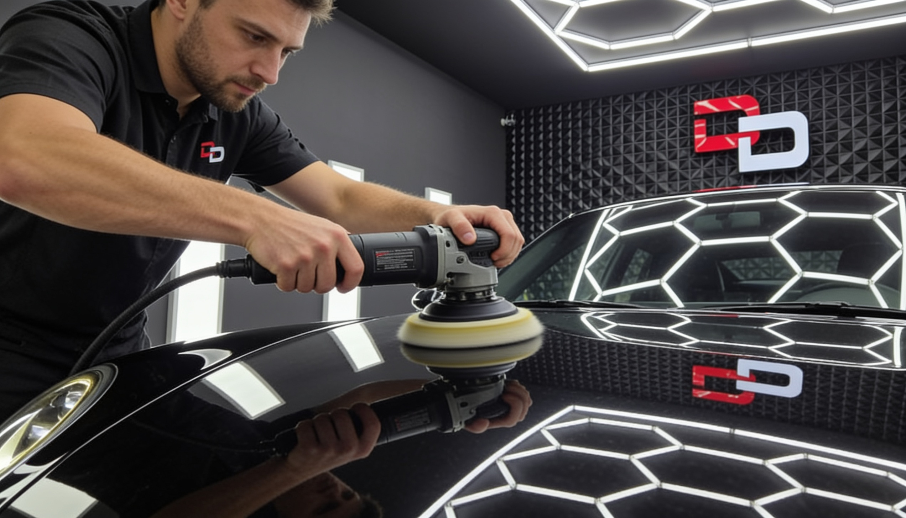

Paint correction ·
Paint Correction: The Complete Guide to a Mirror Finish
Depth, gloss and swirl removal — learn how professional paint correction transforms your vehicle ' s appearance.

Paint correction is a mechanical polishing process that removes swirl marks, holograms, light scratches and oxidation from the paint surface. The result is depth, gloss and a mirror finish that cannot be achieved with a regular car wash.
At Dolphin Detailing in Strumica, correction is performed under hexagonal LED lighting that reveals every paint defect — even those invisible in daylight.
What causes paint swirls?
The most common causes are automatic car washes, incorrect hand-washing techniques, dust and contact with abrasive materials. Every time paint is rubbed without enough lubrication, micro-scratches form that appear as swirls under LED light.
How many stages does correction involve?
The standard process includes a deep wash, decontamination (clay bar), paint thickness measurement, machine polishing and a final protection layer. In our studio we use professional Rupes polishers wall-mounted in the bay, Meguiar ' s products and precise technique.
For heavily damaged paint, two or three polishing stages may be needed — each with a finer abrasive — while mild damage often requires only one stage.
How long does the result last?
After correction, paint retains its gloss longer when combined with ceramic coating. Without protection, new swirls can appear within months — which is why we recommend a ceramic layer immediately after correction.
Frequently asked questions
How long does paint correction take?
It depends on vehicle size and paint condition — typically 6 to 12 hours for a full correction.
Does correction damage the paint?
Not when done professionally. Paint thickness is measured at every step for safe defect removal.